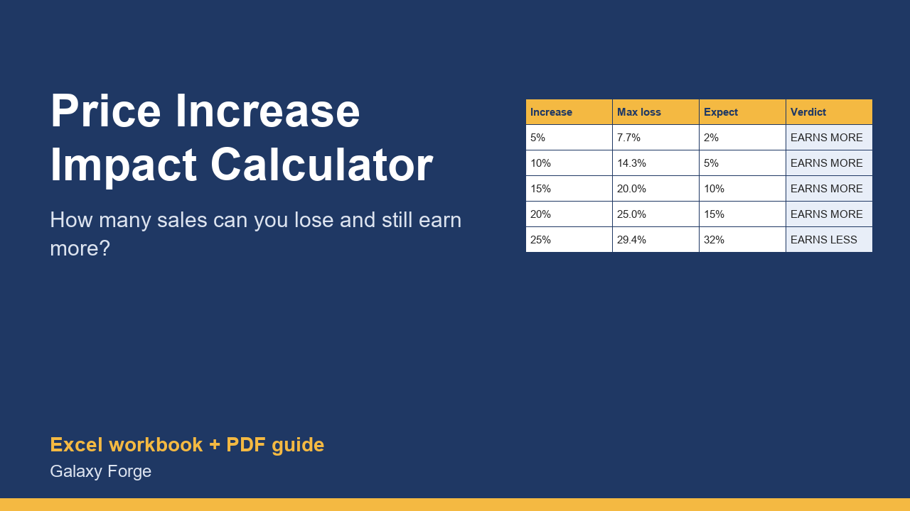

Before you raise prices, see how many sales you could lose and still earn more, and what profit each increase gives at the loss you actually expect.
Most owners delay a price increase because they fear losing customers. The useful question is not whether some customers will leave, but how many could leave before the increase stops paying off.
Because a price increase goes straight to margin, the answer is often larger than people expect. This workbook calculates it for up to eight increases: the most sales you could lose and still make the same gross profit, and the monthly profit at the loss you actually expect.
Enter your current price, variable cost per unit, monthly units and fixed costs once; then try 5%, 10%, 15% or any increase, each with your own estimate of the sales you would lose.
1) On Current, enter the current price, the variable cost of one unit (materials, shipping, payment fees, any cost that grows with each sale), units sold per month and monthly fixed costs. 2) On Scenarios, enter the increases you are considering and, for each, the share of sales you realistically expect to lose. 3) Compare: Max sales you can lose tells you the safety margin; Profit at expected loss tells you what the increase is likely to earn.
Price: $12, one-time. Download: price_increase_impact_calculator.xlsx (Current, Scenarios) and this guide. Works in Excel 2016 or later, Excel for Mac and Excel on the web; opens in Google Sheets and LibreOffice.
New product, listed 2026-10-24: no sales or reviews yet. Example figures in the workbook are illustrative.
This workbook is a planning tool, not financial advice. It models profit from the costs and volumes you enter; real customer response to a price change is uncertain, so test increases carefully.